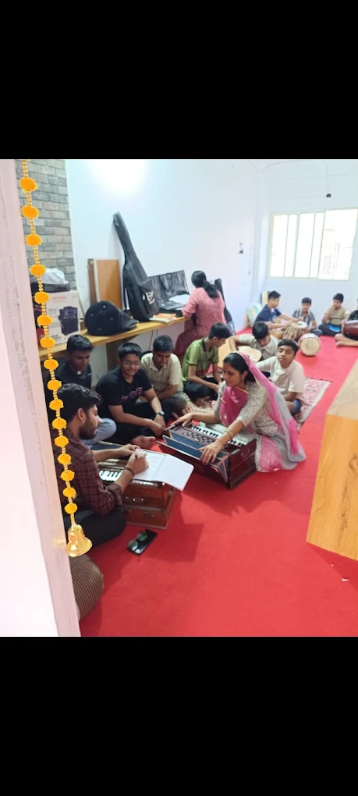
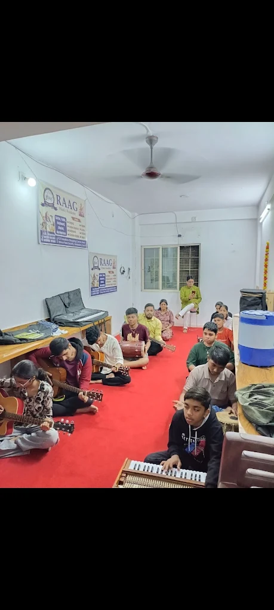

✳ A LITTLE PRACTICE. A LIFETIME OF MUSIC.
Find your
own rhythm.
Some things are better expressed in music.
Discover your voice at Raag Music Academy,
a little space for big musical beginnings.

A place to belong.
A sound that’s yours. ♪real people.
beautiful beginnings. ↗
01 / MAKE ROOM FOR MUSIC
No perfect pitch required.
Just a little curiosity.
There’s a sound
with your name on it.
From your very first note to finding your own style,
explore vocal and instrumental music with us.
VOCAL MUSIC
Your voice. Your expression.
Explore classical, semi-classical and light music. Build a connection with melody, expression and the joy of singing.
Enquire about vocal classes ↗A SMALL INVITATION TO PLAY
Every journey starts
with one note.
Tap a key. See where your curiosity takes you.
SOUND PLAYS ONLY WHEN YOU TAP A NOTE ♪
02 / THE RAAG WAY
Music feels better
when you belong.
At Raag Music Academy, music brings people together. Our academy in Godadara, Surat welcomes learners of all ages to explore vocal and instrumental music.
Rooted in classical, semi-classical and light music, it’s a place to practise, express yourself and enjoy the process—one note at a time.
03 / LIFE AT RAAG
Less posing. More playing.A few notes
from our everyday.
A glimpse inside the academy · Photos from our Google business listing
GOOD WORDS. GREAT COMPANY.
“The absolute best place to learn
music and have fun!”
Sharvari Puranik · Google review
Meet our community on Google ↗04 / YOUR FIRST NOTE IS WAITING
Make a little
room for music.
Curious about a class? Let’s talk about what
you’d love to learn.
FIND US IN GODADARA
A local place.
A world of music.
Shop No. 213, Madhav Shopping Center,near Dhruv Park Society, Sanjay Nagar,
Godadara, Surat, Gujarat 395012Get directions ↗Call us for current class timings and availability.